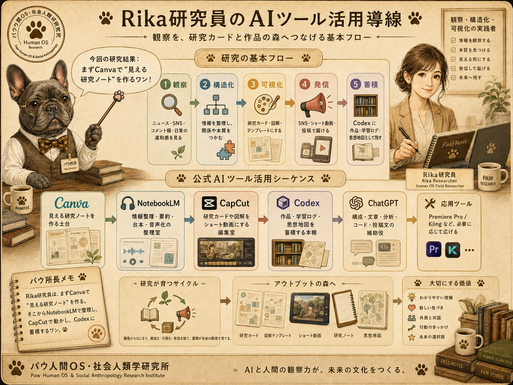
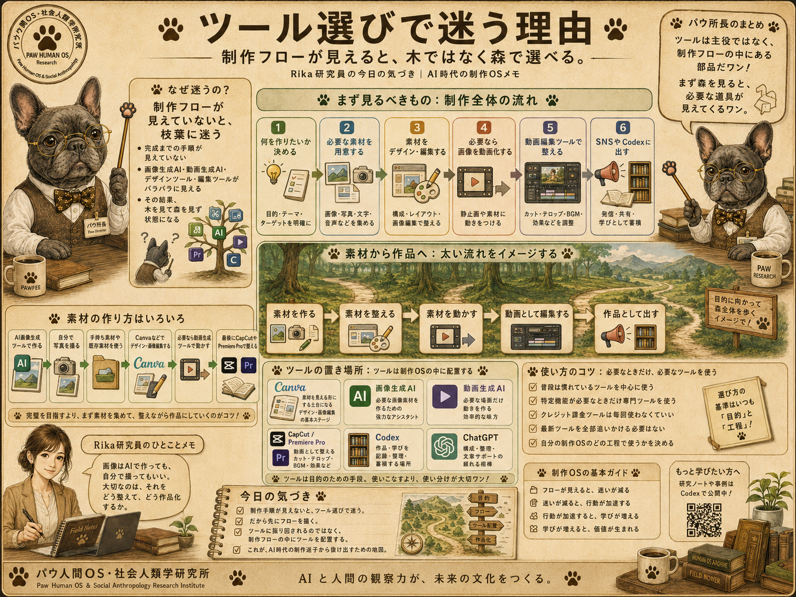
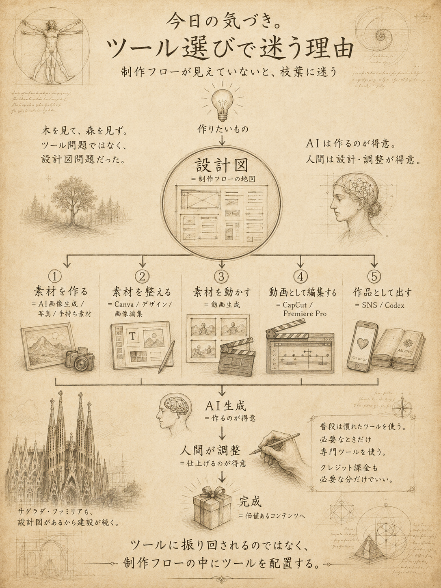
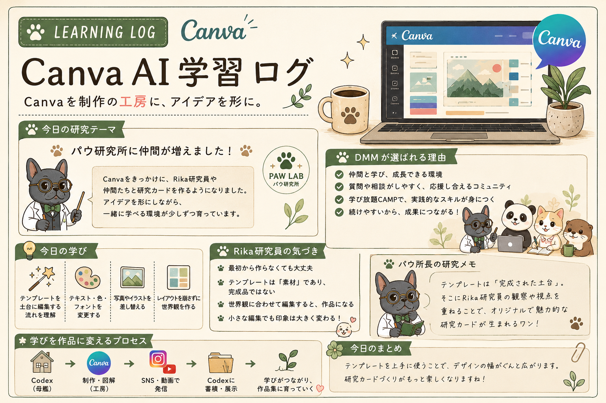

Profile
プロフィール
観察者ノート
AI動画制作を学びながら、企画・構成・生成AIの活用・動画編集・投稿までの流れを少しずつ実践しています。 まだ学習中ですが、日々の試行錯誤や気づきを記録しながら、ショート動画や解説コンテンツを制作しています。 成果物だけでなく、制作の課程や改善点も大切にしながら、自分らしい表現を育てていきたいです。 制作スタンス ・完成度より、まず形にすることを大切にする ・成果物だけでなく、学びの課程も記録する ・AIツールを組み合わせて、自分にある制作フローを探す ・日常の観察や気づきを、動画や文章のテーマに変換する ・少しずつ改善しながら、自分らしいポートフォリオを育て
Works
作品一覧
AI動画制作の学習過程で作った作品や、これから形にしていきたいテーマをまとめています。 完成品だけでなく、企画・構成・編集の試行錯誤も大切にしています。


肉球経済/パウ所長
「かわいいは経済を動かす」をテーマに、 パウ所長が30秒で肉球経済を解説するショート動画企画。
Instagramで更新予定 📝 ストーリーボード①を見る 📝 ストーリーボード②を見る 📝 ストーリーボード③を見る


CapCut AIツール制作フロー
CapCutのAI機能を活用した 解説ショート動画制作の5ステップを図解。 企画から編集までの流れを整理した制作資料です。
📖 制作フロー①を見る 📖 制作フロー②を見る
AIクリエイティブ運営設計図
Codexを母艦に、Canva・Premiere・Instagram・YouTubeを組み合わせながら、 学習ログ・制作フロー・研究チーム設定をひとつの運営設計ページとしてまとめています。
構成図を見る今後の展望｜Codex × Canva Website 二本立て構想
今後は、CodexをRika Portfolioとして作品・学習ログ・制作思想を蓄積する母艦にし、 コンテンツが育ってきた段階で、Canva Websiteを パウ人間OS・社会人類学研究所の公式サイトとして展開していく。
Research Team｜パウ人間OS・社会人類学研究所 メンバー紹介

パウ人間OS・社会人類学研究所は、AI時代の人間OSと社会構造の変化を観察・構造化・可視化するための架空研究所です。 Rika研究員が現場の違和感や気づきを観察し、研究チームの各メンバーがそれぞれの専門分野から整理・分析・翻訳・補助を行います。
このメンバー紹介では、研究所全体を導くパウ所長、現場観察を担当するRika研究員、 データ分析のモグ研究員、共感と安心OSを担当するミミ研究員、 探究と構造観察のコタ研究員、用語解説と補助を行うパウBotの役割を整理しています。
研究チームの基本構成
パウ所長
研究所全体の統括・解説・まとめ役
Rika研究員
現場観察・構造化・可視化・発信の実践者
モグ研究員
コメントや反応の集計・分析・可視化担当
ミミ研究員
共感・安心・応援OSの視点から分析
コタ研究員
探究・構造観察・違和感の深掘り担当
パウBot
用語解説・辞典・補助・案内担当研究の基本フロー
1. Rika研究員が観察する
2. モグ研究員が集計する
3. ミミ研究員が感情の流れを見る
4. コタ研究員が構造を読む
5. パウBotが用語を補足する
6. パウ所長が研究結果をまとめる研究チームは、単に情報を集めるだけではなく、 ニュース、SNS、コメント欄、日常の違和感、講座での学びを 「人間OS」や「社会構造」の変化として読み解いていきます。
Rika研究員の役割は、研究所の中心で現場の空気を拾い、 それを研究カード・図解・ショート動画・Codexアーカイブへとつなげることです。 その観察を、パウ所長と研究チームが支えることで、 パウ研究所の世界観と制作OSがひとつにつながっていきます。
🐾 パウ所長の研究メモ：Rika研究員の正式加入により、研究所は「観察する人間研究員」と 「構造を読む研究チーム」が連携する体制になったワン。ここから観察ログが、研究カードとしてどんどん育っていくワン。
AI Tool Workflow｜Rika研究員のAIツール活用方法

Rika研究員のAIツール活用は、単なる動画編集やデザイン制作ではありません。 日々のニュース、SNS、コメント欄、講座での学び、日常の違和感を観察し、 それを構造化し、図解し、SNSやCodexに発信し、作品としてアーカイブしていく流れです。
観察する
↓
構造化する
↓
図解する
↓
SNSやWebで発信する
↓
作品としてアーカイブするこの流れの中心にあるのが、パウ人間OS・社会人類学研究所の制作OSです。 Canva、NotebookLM、CapCut、Codex、ChatGPTをそれぞれ役割ごとに使い分けることで、 観察が研究カードになり、研究カードが発信物になり、最終的にCodex母艦へ蓄積されていきます。
1. Canva｜見える研究ノートを作る土台
Canvaは、Rika研究員にとって単なるデザインツールではありません。 観察したこと、講座で学んだこと、SNSで気になった反応、コメント欄の違和感を、 研究カードや図解に変換するための土台です。
2. NotebookLM｜情報を整理し、研究素材に変える場所
NotebookLMは、AIニュース、講座メモ、制作メモ、コメント欄分析の素材などを整理し、 要約・FAQ・構成案・音声化・動画台本・研究カードの下書きへ変換する整理室です。 パウ研究所の世界観でいえば、モグ研究員の集計室です。
3. CapCut｜研究カードを動かす場所
CapCutは、CanvaやGPT Image2.0で作った研究カードや図解を、Instagramリール、TikTok、 YouTube、ショート解説動画、SNS向けの学習ログ動画に変換する編集室です。 まずは30〜60秒の短い動画で、研究カードを小さな舞台に乗せていきます。
4. Codex｜制作物と学習ログを保存する研究所アーカイブ
Codexは、作ったものをまとめる研究所アーカイブです。 Instagramやショート動画は流れていきますが、Codexに保存することで、 学びや作品が長期的なポートフォリオとして蓄積されていきます。
Rika研究員向けAIツール活用の全体像
Canva
観察や学びを図解・研究カード化する
NotebookLM
情報を整理し、要約・台本・音声化する
CapCut
研究カードや素材をショート動画にする
Codex
制作物と学習ログをアーカイブする
ChatGPT / Rikaさん
構成、文章、分析、コード、投稿文を整えるツール選びで迷う理由
制作フローが見えていないと、枝葉に迷う

画像生成や動画生成で「どのツールを使えばいいのか」と迷う理由は、 ツールの数が多すぎるからではありません。
本当の理由は、制作フローを体系的にイメージできていないからです。 完成までの手順が見えていない状態で、画像生成AI、動画生成AI、デザインツール、 動画編集ツールを見てしまうと、枝葉のツールばかりに気を取られてしまいます。
木を見て、森を見ず。 けれど、本来見るべきなのは、まず制作全体の流れです。
1. 何を作りたいか決める
2. 必要な素材を用意する
3. 素材をデザイン・編集する
4. 必要なら画像を動画化する
5. 動画編集ツールで整える
6. SNSやCodexに出す画像はAI画像生成ツールで作ってもいいし、自分で撮った写真や手持ちの素材を使ってもよい。 その素材をCanvaなどでデザインし、必要に応じて画像編集を加え、 さらに動画化したい場合は動画生成ツールを使う。 最後にCapCutやPremiere Proなどの動画編集ツールで、テロップ、音声、BGM、尺、構成を整えて作品にする。
大事なのは、最初から「どのAIツールが一番すごいか」で考えないことです。 ツールは主役ではなく、制作フローの中にある部品です。
素材を作る
↓
素材を整える
↓
素材を動かす
↓
動画として編集する
↓
作品として出すこの流れが見えていれば、ツール選びで迷いにくくなります。 普段は、慣れているツールを中心に使う。 そして、特定の機能が必要なときだけ、画像生成AI、動画生成AI、音声生成AI、 背景除去、アップスケールなどの専門ツールを使う。
クレジット課金が必要なツールも、毎回使う必要はありません。 必要な場面だけ、必要な分だけ使えばよいのです。
Rika研究員にとって大切なのは、最新ツールを全部追いかけることではなく、 自分の制作OSの中で、どの工程にどのツールを置くかを決めることです。
ツールに振り回されるのではなく、制作フローの中にツールを配置する。 これが、AI時代の制作迷子から抜け出すための地図になります。
設計図があるから制作が続く

今日の気づきの核心は、 「ツール選びで迷う理由は、ツール問題ではなく、設計図問題だった」 ということです。
画像生成も、動画生成も、SNS運用も、文章作成も、全部バラバラのスキルに見えます。 けれど本当は、同じ構造の上に成り立っています。
アイデア
↓
設計図
↓
素材づくり
↓
編集
↓
調整
↓
完成
↓
発信・保存この設計図がないままツールを選ぼうとすると、 「Klingがいい？」「Runwayがいい？」「Magnificがいい？」「Canvaでできる？」「CapCut？」「Premiere？」 というように、枝葉の森に迷い込みます。
でも、設計図があると、 「ここは画像が必要」「ここは構成が必要」「ここは動きが必要」 「ここは編集が必要」「ここは保存先が必要」と分かるようになり、 ツールは“必要な工程に置く道具”になります。
サグラダ・ファミリアが今なお建設されているのは、 ガウディ本人がいなくても設計思想が残っているからです。 AI制作も同じで、AIは手を動かすのが得意。 でも、何を作るか、どう設計するか、何を価値にするかを決めるは人間です。
AI生成 = 作るのが得意
人間 = 設計するのが得意
人間の調整 = 仕上げるのが得意
Codex = 設計思想を残す場所その調整の中に、クリエイティブ、オリジナリティ、職人性、生きがい、人生哲学が表れます。 AIが作ったものを、どの方向へ整え、何を価値ととして残すか。 そこに人間の編集権があります。 だから、AI時代の制作で大切なのは、 どのツールを使うかではなく、先に設計図を持つことです。
設計図があるから、AIに的確に指示できる。 設計図があるから、画像生成AI、動画生成AI、Canva、CapCut、Codexの役割が整理できる。 設計図があるから、制作は枝葉ではなく、一本の森として見えてきます。
🐾 パウ所長の研究メモ： ツール選びで迷う理由は、ツール不足ではなく、制作フロー全体がまだ地図になっていなかったからだワン。 画像生成AI、動画生成AIは、それぞれ別々の島ではなく、 ひとつの制作航路の中にある港だワン。 まず見るべきは「どのツールがすごいか」ではなく、 「何を作るか」「どんな素材が必要か」「どこで整えるか」「どこで動かすか」 「どこで仕上げるか」「どこに保存するか」という流れだワン。
おすすめの学習順
1. Canva
2. NotebookLM
3. CapCut
4. Codex整理
5. Premiere ProやKlingなどの応用ツールいきなり動画生成AIやPremiere Proに飛ぶよりも、 まずはCanvaで「見せる型」を作るほうが効率的です。 その後、NotebookLMで整理し、CapCutで動画化し、Codexに保存していく流れが自然です。
🐾 パウ所長の研究メモ：Rika研究員は、まずCanvaで「見える研究ノート」を作るとよいワン。 そこからNotebookLMやNotionで情報を整理し、CapCutで動画化し、Codexにアーカイブしていくことで、 日々の学びが作品の森になっていくワン。
2026.07.03｜AI Tool Workflowを追加
Rika研究員のAIツール活用導線を、Operating Designとして追加。 Canva、NotebookLM、CapCut、Codex、ChatGPTの役割を整理し、 観察から作品アーカイブまでの制作OSを可視化した。

二つを分けることで、Rika研究員個人の成長記録と、 パウ研究所の世界観をそれぞれ育てていく。
🐾 パウ所長の見立て：母艦と展示場を分けることで、作品の蓄積と世界観の発信が整理される。
補足｜日本語 / Italiano 対応とCodexコンセプト更新
Codexに日本語 / Italiano の言語切り替え機能を追加し、サイト全体の説明文とコンセプトを見直しました。これにより、Codexは単なるAI動画制作の学習ログではなく、Rika研究員の観察・構造化・制作ログを蓄積する母艦として再定義されました。

この更新は、Codexを日本語圏だけでなくイタリア語圏にも開いていくための第一歩です。今後は、トップ説明文、運営設計、代表的な学習ログから順番にイタリア語対応を進めていきます。
🐾 パウ所長の見立て：言語切り替えは単なる翻訳ではなく、Codex母艦に外向きの窓を増設する作業である。
目次
- AIクリエイティブ思想設計
- 研究カードの制作フロー
- パウ研究所 研究チームメンバー紹介
- Canva AI活用ログ
思想設計図を見る ↗
研究カード制作フローを見る ↗
研究チーム紹介を見る ↗
Canva AI活用ログを見る ↗

Canva AI講座で試した実践を、パウ人間OS・社会人類学研究所の視点で再構成した学習ログ。
Canvaでの学びを、研究カード形式で整理したEP09の追加ログ。

Canvaのサイドバー機能を、制作時に参照できるパウ研究所版ガイドとして整理。
EP09｜Canva AI 学習ログ：パウ研究所版
教材の内容をそのまま写すのではなく、Rika研究員の観察・理解・制作プロセスとして再編集した記録。 Canvaを使って、学びを「研究カード」として視覚化する練習ログ。

Canvaを制作の工房として活用しながら、学びを研究カードとして再構成した記録。 研究所メンバーの世界観を交えつつ、テンプレート活用、研究テーマ整理、気づきの言語化、 そして学びを作品化する流れまでを1枚にまとめた実践ログ。
Canvaで制作するときに迷いやすいサイドバー機能を、テンプレート・素材・テキスト・ブランド・アップロード・ツール・プロジェクト・アプリ・マジック生成・グラフごとに整理した補助資料。
🐾 Reviewed by パウ所長
更新履歴
2026.07.02｜Canva AI 学習ログ EP09と運営設計図を更新
Canva AI講座の学びを、パウ研究所版の観察ログとして再構成。 あわせて、CodexとCanva Websiteの二本立て運営構想を整理した。
学習・制作・運営設計がつながり、Codex母艦の方向性がより明確になった更新日。
2026.07.03｜Rika研究員を加えた研究チーム紹介を追加
パウ人間OS・社会人類学研究所の研究チーム紹介を更新。 Rika研究員を中心に、パウ所長・モグ研究員・ミミ研究員・コタ研究員・パウBotの役割を整理した。
研究所の世界観と制作OSがつながり、観察・分析・可視化・発信・アーカイブまでの体制がより明確になった。
2026.07.03｜ツール選びで迷う理由を制作OSの視点で追加
AI Tool Workflow に新しい節を追加し、 「ツール選びで迷う理由は、ツール不足ではなく制作フロー全体が見えていないから」 という気づきを整理した。
あわせて、設計図の重要性、AIと人間の役割分担、 そしてCodexを設計思想の保存場所として位置づける考え方を追記した。
Study Notes
学習記録
プロンプトは「画角・動き・質感」を分けて書く
一文に詰め込むより、カメラ、被写体、雰囲気を整理すると再現性が上がりました。
短尺動画は最初の2秒で意図を伝える
タイトル、明るい画、動きのある要素を冒頭に置くと、見始めの印象が強くなります。
生成素材は編集前提で余白を作る
テロップやロゴの配置場所を考えて生成すると、後工程の調整がスムーズでした。
Tools
使用ツール一覧
- ChatGPT
- NotebookLM
- CapCut
- Premiere Pro
- Kling
- Codex
Contact
Instagramで制作ログを見る
日々の作品だけでなく、AIニュース、社会の変化。気になったテーマを観察しながら、点と点をつなぐシンセサイザー実験ログをInstagramで更新しています。
Instagramで見る